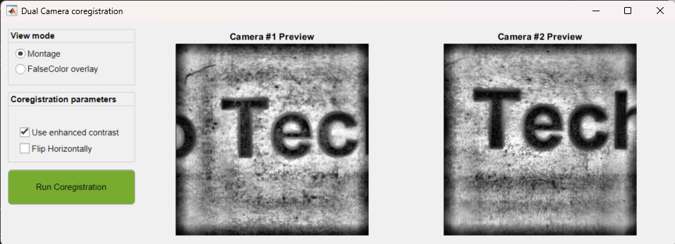

This tool is dedicated to perform the coregistration of the images from Dual-Camera Imaging systems from LabeoTech. The goal of this tool is to ensure that the output of both cameras are aligned. This documentation concerns the usage of the tool in the DataViewer app. For more information about the Dual-Camera imaging system and the acquisition software, please refer to the product's documentation.
Here we cover the steps to perform the coregistration for the first time between the data from the two cameras.
Screenshow from LabeoTech's Imaging software showing the images from the two cameras

Coregistration tool interface during first time execution of the coregistration
In order to validate if the coregistration worked. Go to Utilities → OiS Dual Cam Coregistration:
Dual-Camera coregistration tool interface showing the result of the coregistration
Use the View mode FalseColor overlay to facilitate the visualization of the registered images.
Here are some examples of a good and poor quality registration:
Examples of good and bad coregistrations in FalseColor view mode
If the first coregistration yielded an unsatisfactory result, one can redo it. To do so, delete the Geometric transformation file by clicking on the Discard button. The Geometric transformation file will be first copied to a backup file and will be deleted. Once the Geometric transformation file deleted, one can redo the coregistration by following the steps 1-3 shown in the Initial coregistration section.
To restore the backup file, click on Recover from backup button.
Note
The Geometric transformation file is located at the LabeoTech default folder ..\USER\Documents\LabeoTech\Config\umIT\tformFiles.
To access the folder, click on Show in folder button.
The Data import function run_ImagesClassification will look for the Geometric transformation file inside the labeotech folder and will automatically apply the coregistration in all subsequent data import processes as long as the file coreg2cam_tform.mat exists. At the end of the data import process, a copy of the Geometric transformation matrix will be stored in the Save directory along with the imported .dat files.